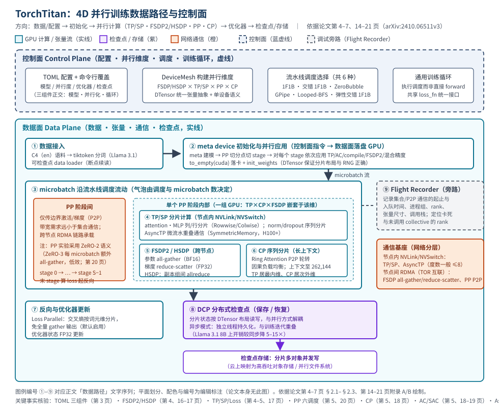

TorchTitan：面向生产级 LLM 预训练的一站式 PyTorch 原生方案
本页为第 14 篇（训练、并行与 GPU Kernel 类），全部定量内容取自本地论文 PDF 14_TorchTitan_2410.06511.pdf（arXiv:2410.06511v3，cs.CL，2025-06-07 水印），并逐条标注 PDF 页码与章节；21 页已全部逐页核对。
快速标签与阅读说明
- 生命周期：训练（LLM 预训练）
- 形态：分布式（单机 8 GPU → 512+ GPU，4D 并行）
- 目标硬件：NVIDIA H100 95 GiB（论文口径：非标准 HBM2e、低 TDP）；Float8/AsyncTP 需 H100+ 与节点内 NVSwitch
- 核心资源：GPU 算力 · HBM 显存 · 节点内 NVLink/NVSwitch · 节点间 RDMA · 检查点存储
- 证据状态：P + R（正文含 E/I 标签）
最后核验日期：（PDF 全部 21 页逐页核对；官方仓库已在线核验）。
证据完整度：关键定量结论均带 PDF 页码/表号与完整测试条件，未获取的字段一律写明「论文未明确披露」；仓库经在线核验（R）；云上产品映射为示例（E，未逐一核验规格与价格）；成本公式、编排与运维建议为参数化推断（I）。本页不设任何评分。
证据标签图例： P＝论文 R＝官方仓库 E＝外部资料 I＝编辑推断
1. 摘要与一句话判断
| 标题 | TorchTitan: One-stop PyTorch native solution for production ready LLM pretraining（编辑译名：面向生产级 LLM 预训练的一站式 PyTorch 原生方案） |
|---|---|
| 作者与机构 | Wanchao Liang、Tianyu Liu、Less Wright、Will Constable、Andrew Gu、Chien-Chin Huang、Iris Zhang、Wei Feng、Howard Huang、Junjie Wang、Sanket Purandare、Gokul Nadathur、Stratos Idreos；Meta（Purandare 为哈佛在读、工作完成于 Meta）与 Harvard University P（第 1 页） |
| arXiv / 版本 | arXiv:2410.06511v3（cs.CL），PDF 水印 2025-06-07；文内日期 June 10, 2025；未标注会议录用信息 P（第 1 页） |
| 代码 | 论文第 1 页明示 Code: https://github.com/pytorch/torchtitan，经在线核验（R，见 #links） |
| 评估范围 | Llama 3.1 家族 8B / 70B / 405B；8 → 512 GPU；1D → 4D 并行 P（第 1 页摘要、第 7 页 §3） |
3 分钟速读
- 问题：现有分布式训练方案散落在多个库/仓库中，难以组合与比较，检查点扩展性、故障恢复与调试工具不足，维护工程量大 P（第 1-2 页 §1）。
- 方案：以 DTensor + DeviceMesh 为统一抽象，组合 FSDP2（默认 1D）、HSDP、TP/SP（含 Loss Parallel、AsyncTP）、PP（1F1B/交错 1F1B/ZeroBubble 等 6 种调度）、CP，叠加激活检查点三模式、regional compilation、Float8；生产侧集成 DCP 异步检查点与 Flight Recorder P（第 3-7 页 §2）。
- 论文声称的主要结果：在「已叠加此前全部技术」的优化基线上，Llama 3.1 8B（128 GPU、1D）加速 65.08%，70B（256 GPU、2D）经 AsyncTP 加速 12.59%，405B（512 GPU、3D）经交错 1F1B 加速 30%；CP+4D 支撑 262,144 token 上下文训练 P（第 1 页摘要；条件见 #experiments 表 E1-E6）。
- 云上含义：训练平台的吞吐来自「叠加式」优化（编译 → Float8 → AsyncTP → 调度），而平台可用性与故障恢复来自 DCP 异步检查点（开销降 5-15 倍，Llama 3.1 8B）与 Flight Recorder 排障 P（第 7-8 页）；I 前者决定 GPU 租用成本，后者决定大集群下的有效训练时间占比。
- 主要限制：实验全部为 Llama 3.1 dense 模型、非标准 H100（作者自述不知确切峰值 TFLOPS）；MoE 在论文时点为 Ongoing；Float8/AsyncTP 依赖 H100+ 与 NVSwitch；仓库要求 PyTorch nightly P（第 7 页脚注 1、第 20 页表 7、第 6 页 §2.2.3）+ R（README，2026-09-14 核验）。
2. 问题背景
规模背景：论文以 Llama 3.1（405B 参数、15T tokens、30.84M GPU 小时、16K H100 GPU）与 PaLM（540B 参数、0.8T tokens、9.4M TPU 小时、6144 TPUv4）说明前沿模型训练的资源量级；并指出大规模训练易发 GPU 故障，需要高效恢复机制与检查点策略来减少停机 P（第 1 页 §1）。I 对架构师而言，这意味着「算得快」与「坏得起、恢复得快」必须同时设计。
现有方案的五大不足（论文归纳）：P（第 2 页 §1）
- 不可组合：难以把多种并行技术叠加，限制了多维探索与内存/计算优化的集成，训练效率受损。
- 架构不灵活：缺模块化与可扩展性，新方法、新优化、新硬件难以接入。
- 硬件利用率不足：未用好先进硬件特性，GPU 效率次优，且缺少可定制的检查点策略做内存-计算权衡。
- 生产训练支持不足：分布式检查点扩展性有限、故障恢复繁琐、调试工具缺乏，阻碍生产级工作流。
- 框架局限：依赖外部且维护不善的库，未能利用 PyTorch 优化 kernel、新特性与编译器支持，带来低效与兼容性问题。
根因：论文认为这些问题源于全栈缺少统一一致的张量与设备抽象，导致并行策略、检查点与效率优化彼此割裂 P（第 2 页 §1 末段）。
目标工作负载与约束：Llama 类 dense Transformer 的千亿参数、万亿 token 预训练；数千加速器规模；要求生产可用（检查点、恢复、调试、日志）P（第 1-3 页 §1-§2）。基线口径：性能对比的基线为「已包含此前全部叠加技术」的优化配置（stacked baselines），而非裸 eager P（第 8 页 §3.2）。
3. 核心机制
3.1 代码组织与统一抽象
- 三组件正交：①并行无关、为可读性设计的模型定义；②把并行与训练优化应用到具体模型的 helpers；③通用训练循环。全部经 TOML 文件 + 命令行覆盖配置，便于新增模型与并行技术 P（第 3 页 §2、图 1）。
- DTensor/DeviceMesh：扩展 DTensor 的 n-D 分片、兼容 torch.compile、经 state_dict 支撑 n-D 模型高效检查点；DeviceMesh 表达并行维度。二者提供统一抽象与「正确的单设备语义」P（第 2 页 §1、第 3 页贡献 1）。
- meta device 初始化：先在 meta 设备仅凭元数据建模型（初始化极快），分片为 DTensor 后用用户自定义函数初始化参数，保证分片布局与 RNG seed 正确——解决「建大模型先爆 CPU/GPU 内存」的起点问题 P（第 4 页 §2.1.1；代码见第 14-15 页附录 A）。
3.2 四个并行维度（可自由组合至 4D）
| 维度 | 实现机制 | 通信与硬件前提 | 论文定位 |
|---|---|---|---|
| FSDP2 / HSDP（数据并行） | FSDP2 以逐参数 DTensor 分片替代 FSDP1 的 FlatParameter；默认自动按 world size 分片；HSDP 构建 2D DeviceMesh（shard 组内跑 FSDP、replica 组间普通 DP，两者乘积为实际 DP world size）（第 4 页 §2.1.2、第 16-17 页附录 B.1/B.2） | 参数 all-gather（BF16）+ 梯度 reduce-scatter（FP32）；HSDP 增加副本组间梯度 allreduce；可跨节点走 RDMA | 默认 1D 并行；通信快于计算时常可用到 512 GPU；Llama 2 7B 对比 FSDP1：内存约 −7%、吞吐约 +1.5%（第 4、9、16 页） |
| TP / SP（张量/序列并行） | 用 RowwiseParallel/ColwiseParallel 把 attention/MLP 参数分片为 DTensor，不改模型代码；SP 对 norm/dropout 沿序列维分片；TP 与 SP 捆绑、由 TP degree 统一控制；Loss Parallel 按词元维分片交叉熵（默认启用）（第 4-5 页 §2.1.3、第 17 页附录 B.3） | 引入 all-reduce/all-gather/reduce-scatter 同步中间激活，需节点内高速网络（NVLink），度数一般 ≤8（第 9 页 §3.3.2） | 降低集合通信时延、缩小有效 batch、优化矩阵乘形状、为大模型/长序列降峰值内存（第 9 页 §3.3.2） |
| PP（流水线并行） | 模型按切分点分 S 个 stage，各占一组设备；输入批切 microbatch；经 torch.distributed.pipelining 支持 1F1B、GPipe、交错 1F1B、ZeroBubble、Flexible-Interleaved-1F1B、Looped-BFS 共 6 种调度（pipeline IR 表达调度、编译 pass 插入/优化通信）；PP 实验采用 ZeRO-2 语义（第 5 页 §2.1.4、第 17 页 B.4、第 20 页表 7 与 B.10.1） |
阶段间仅点对点传边界激活/梯度，带宽需求小；效率取决于调度与 microbatch 大小（气泡）（第 10 页 §3.3.3） | 应对更大规模或带宽受限集群，缓解 FSDP 通信时延（第 10 页 §3.3.3） |
| CP（上下文并行） | 沿序列维分片 DTensor；上下文管理器动态替换 scaled_dot_product_attention 调用（不改模型代码）；DTensor dispatcher 扩展支持 Ring Attention 与 causal 负载均衡（第 5 页 §2.1.5、第 18 页附录 B.5） |
Ring Attention P2P 轮转；与 FSDP/TP/PP、AC、torch.compile、DCP 全兼容；大规模训练时 TP 居最内维、CP 居次外维（第 10 页 §3.3.4） | 主用于超长上下文：Llama 3.1 8B + 8 H100 支撑 262,144 token 上下文、MFU 随 CP 度仅轻微下降（第 5 页 §2.1.5） |
3.3 内存与计算优化
- 激活检查点三模式：full AC（反向重算全部所需激活）；op-level SAC（保存 matmul、SDPA 等高算术强度算子的中间结果，其余重算；为平衡吞吐仅每隔一个 matmul 保存）；layer-level SAC（每 x 个 TransformerBlock 包一层，x=1 等价 full）。作用于 TransformerBlock 层级，经 torch.utils.checkpoint 实现，常在多维并行之后仍属必要 P（第 5 页 §2.2.1、第 18-19 页附录 B.6）。
- regional compilation：对每个 TransformerBlock 单独应用 torch.compile——每区域获得无 graph break 的全图（兼容 FSDP2/TP/DTensor），且相同结构的块只编译一次、大幅缩短编译时间；经算子融合与计算-通信重排提升吞吐与内存 P（第 6 页 §2.2.2）。
- AsyncTP：把 attention/FFN 内的 TP 矩阵乘分数化为小块，微流水线式重叠通信与计算；基于 SymmetricMemory（节点内每 GPU 相同共享缓冲、直连 P2P，快于标准 NCCL），依赖 NVSwitch、一般仅 H100+ 可用 P（第 6 页 §2.2.3、第 19 页 B.7）。
- 混合精度与 Float8：默认 MixedPrecisionPolicy 为参数 all-gather/计算 BF16、梯度 reduce-scatter/优化器 FP32；Float8 为派生数据类型、仅选择性应用于线性层（H100+），torchao.float8 提供 dynamic/delayed/static 逐张量缩放，与 autograd、torch.compile、FSDP2、TP（含 Float8 all-gather）可组合 P（第 6 页 §2.2.4、第 19 页 B.8）。
3.4 生产级训练设施
- DCP 分布式检查点：借 DTensor 同时封装全局/本地张量信息（与并行方式解耦），保存为内部格式；加载时按当前 DTensor 布局匹配取回所需分片——兼得「换并行布局可复用」与「分片并行读写高效」；异步检查点把存储持久化放独立线程、与后续训练迭代重叠，Llama 3.1 8B 上开销较同步分布式检查点降低 5-15 倍 P（第 7 页 §2.3.1）。
- Flight Recorder：记录所有 collective 与 p2p 通信的 start/end/enqueue 时间及元数据（进程组、源/目的 rank、张量尺寸、调用栈）；对 PP 可定位 GPU 上最后完成的 send/recv 以排查调度 bug，对 FSDP/TP 可找出未调用集合通信的 rank P（第 7 页 §2.3.2）。
- 日志与可观测：内置训练日志指标（吞吐、内存读数等），每 10 次迭代记录、实验统一取第 90 次迭代读数；PP 各 rank 峰值内存取最大 P（第 8 页 §3.2 与脚注 2）。
4. GPU/系统数据路径

端到端文字序列（与图中编号一致）
- ① 数据接入：C4（en 变体，Common Crawl 清洗语料）经 Llama 3.1 官方 tiktoken 分词，进入可检查点的 data loader（支持断点恢复读取）P（第 7 页 §3.1）。
- ② 初始化：模型先在 meta 设备上创建（仅元数据），按
pipeline_parallel_split_points切分为 PP stage（looped 调度可得多个 model_parts），对每个 stage 依次应用 TP 计划、激活检查点、torch.compile、FSDP2 与混合精度，最后to_empty(cuda)落卡并以用户函数初始化权重（DTensor 保证分片布局与 RNG 正确）P（第 4 页 §2.1.1、第 14-15 页附录 A 代码）。 - ③ microbatch 流动：输入批切为 microbatch，按所选流水线调度（如交错 1F1B）在各 stage 间流动；stage 之间仅以 P2P 传边界激活（前向）与梯度（反向），末 stage 计算损失并启动反向；梯度归约只在最后一个 microbatch 后发生 P（第 5 页 §2.1.4、第 20 页 B.10.1）。
- ④ stage 内 TP/SP：attention/MLP 参数按列/行分片（RowwiseParallel/ColwiseParallel），中间激活经 all-gather/reduce-scatter 在节点内 NVLink 上同步；norm/dropout 沿序列维分片（SP）；启用 AsyncTP 时矩阵乘被切小块、通信与计算微流水重叠（SymmetricMemory 直连 P2P）P（第 4 页 §2.1.3、第 6 页 §2.2.3、第 17 页 B.3）。
- ⑤ stage 内 FSDP2/HSDP：前向按需 all-gather 参数（BF16），本地计算后立即（除最后一个 TransformerBlock 外）reshard；反向梯度 reduce-scatter（FP32）并更新分片优化器状态；HSDP 形态下 shard 组内如上、副本组间再做梯度 allreduce P（第 4 页 §2.1.2、第 15-17 页附录 A/B.1/B.2）。
- ⑥ stage 内 CP：序列维分片时，attention 调用被上下文管理器替换为 CP 算子，经 Ring Attention P2P 轮转 KV/激活并做因果负载均衡；输入 ids/labels 等缓冲按 cp_seq_dims 声明参与分片 P（第 18 页附录 B.5 与第 15-16 页附录 A 代码）。
- ⑦ 反向与优化器：Loss Parallel 使交叉熵按词元维分片计算、免全量 gather 模型输出（默认启用）；优化器状态 FP32 更新 P（第 5 页 Loss Parallel、第 6 页 §2.2.4、第 19 页 B.8）。
- ⑧ 检查点路径：DCP 按 DTensor 布局把分片模型/优化器状态写为内部格式存储；异步模式下持久化在独立线程执行、与后续训练迭代重叠（Llama 3.1 8B 开销较同步降 5-15 倍）；加载时按当前并行布局匹配取回分片，可跨并行配置复用 P（第 7 页 §2.3.1）。
- ⑨ 调试旁路：训练全程 Flight Recorder 记录每个 collective/p2p 的 start/end/enqueue 时间与元数据（进程组、rank、张量尺寸、调用栈），作业卡死/崩溃时用于定位最后完成的 send/recv 或未调用集合通信的 rank P（第 7 页 §2.3.2）。
| 事实/数值 | 对象与条件 | 论文定位 |
|---|---|---|
| TP 度数一般 ≤8，限于节点内（NVLink）；原文另有「Scaling beyond 4192 GPUs requires combining TP with PP」一句（数字 4192 系原文原样印出、无分隔符；编辑注：疑为排版笔误，不改动原文）I | TP 扩展上限 | P 第 9 页 §3.3.2 |
| HSDP：data_parallel_shard_degree × data_parallel_replicate_degree ＝ 实际 DP world size | HSDP 配置语义 | P 第 17 页 B.2 |
| PP 实验用 ZeRO-2（ZeRO-3 每 microbatch 额外 all-gather、低效） | PP + FSDP 组合口径 | P 第 20 页 B.10.1 |
| CP 支撑 262,144 token 上下文（8B、8 GPU）；4D 下 TP 居最内维、CP 居次外维 | 长上下文训练 | P 第 5 页 §2.1.5、第 10 页 §3.3.4 |
| 异步检查点开销较同步降 5-15×（Llama 3.1 8B）；硬件/检查点大小/存储介质：论文未明确披露 | DCP 异步检查点 | P 第 7 页 §2.3.1 |
| 每主机 8 GPU + NVSwitch；两主机一机架接 TOR；TOR 间后端 RDMA 互联 | 实验集群拓扑 | P 第 7 页 §3.1 |
5. 架构权衡
-
组合性 ↔ 配置复杂度
P 4D 并行自由组合是核心卖点（第 3-5 页）。I 代价是配置空间指数扩大：FSDP/TP/PP/CP 度数、microbatch 数、调度选择、AC 模式需联合调优；TOML 配置与论文配方指南（§3.3）可降低门槛，但首轮容量规划仍需专人负责。
-
通信模式互斥：FSDP ↔ TP ↔ PP
P FSDP 集合通信时延随 world size 线性上升（≤512 GPU 常够用）；TP 降时延但引入阻塞集合通信、限于节点内（≤8）；PP 只传边界激活/梯度、省带宽但引入气泡（第 9-10 页 §3.3）。I 三者是「带宽↔时延↔气泡」的互补互换，按「TP 节点内 → PP 跨带宽 → FSDP 收尾」分层叠加是论文推荐的次序。
-
内存 ↔ 重算（AC/SAC）
P full AC 内存最低但反向重算全部激活；op-level SAC 保存高算术强度算子（matmul/SDPA）、重算其余；layer-level SAC 每 x 层一档，提供连续折中（第 5 页 §2.2.1、第 18-19 页 B.6）。I 这是训练平台最常调的「内存-吞吐旋钮」，建议以吞吐-显存曲线标定后固化配方。
-
编译收益 ↔ 灵活性/编译等待
P regional compilation 获得无断点全图且重复结构只编译一次（第 6 页 §2.2.2）；表 1/2 显示 +6.64%/+14.82% 吞吐（第 8 页）。I 代价是动态行为受限与启动期编译等待；模型结构频繁变更的研发阶段需评估重启频率。
-
精度/可测性 ↔ 效率（Float8）
P Float8 在线性层带来 +50.35%/+65.08% 吞吐（8B，第 8 页表 1/2），但使 MFU 定义不明确、需 dynamic/delayed/static 缩放策略保稳定（第 6、8 页）。I 收益最大也最难治理：上线前需做收敛对照（论文给出损失收敛验证方法，第 21 页），并把「MFU 不可比」写进平台口径。
-
检查点：同步 ↔ 异步
P 异步检查点把持久化移出关键路径，开销降 5-15×（Llama 3.1 8B，第 7 页 §2.3.1）。I 异步窗口内的最新状态尚未落盘，故障时回退更多步数；该窗口大小、检查点大小与存储介质需求论文未明确披露，落地方案需自行压测。
-
HSDP：通信 ↔ 冗余显存/存储
P HSDP 把 FSDP 通信限制在 shard 组内、以副本组 allreduce 替代全局通信，支持继续以数据并行扩展（第 4、17 页）。I 代价是每副本一份完整分片状态，显存/检查点占用随副本度线性增长；跨副本的容灾布局（副本组跨机架/可用区）是云上额外设计点。
6. 云上部署映射
以下映射为厂商中立示例；具体产品命名/规格仅作说明并标 E，以厂商当时目录为准，未逐一在线核验。论文事实（集群拓扑、机制）单独标注 P。
| 论文需求 | 云上映射（示例） | 证据与说明 |
|---|---|---|
| 计算节点：每主机 8 GPU + NVSwitch（TP/AsyncTP/SymmetricMemory 前提） | E 8×H100/H200 整机实例：如 AWS p5/p5e 家族、Google Cloud a3-highgpu/a3-megagpu、Azure ND H100 v5 系列（示例命名） | 硬件前提为论文事实 P（第 6-7 页 §2.2.3、§3.1）；实例名为厂商目录示例 E |
| 网络：节点内 NVLink/NVSwitch；节点间 RDMA 后端（TOR 互联） | E GPU 组网选型：RDMA over Converged Ethernet（RoCEv2）或 InfiniBand 后端网络；TP 组必须同主机 | 论文实验拓扑 P（第 7 页 §3.1）；带宽等级与云厂商组网规格需按目录核对 E |
| 存储：DCP 分片检查点高吞吐读写；异步持久化与训练重叠 | E 高吞吐对象存储或并行文件系统（如各云的 Lustre/GPFS 类托管服务、对象存储多 part 并发写）；按租户/项目隔离的检查点桶 | DCP 分片读写机制 P（第 7 页 §2.3.1）；存储产品与吞吐规格为云示例 E |
| 编排：多节点作业启动、失败重启、拓扑感知放置 | E Slurm / Kubernetes（torchrun 风格 launcher）+ GPU 拓扑感知调度；作业级重试与节点替换 | 论文未指定编排器（实验为固定集群）P（第 7 页 §3.1）；编排与放置建议为 I/E |
| 弹性：改变并行度后继续训练；跨集群迁移 | E 借 DCP「布局解耦」：缩容/换型后从旧检查点按新并行布局恢复；HSDP 度数调整作为弹性维度 | DCP 跨布局复用为论文机制 P（第 7 页 §2.3.1）；弹性操作流程为编辑建议 I |
| 可观测：吞吐/内存日志 + Flight Recorder 通信事件 | E 日志接入集中式监控（Prometheus/Grafana、云厂商托管监控）；Flight Recorder 追踪文件按作业归档并设访问控制 | 内置日志指标与 Flight Recorder 为论文功能 P（第 7-8 页 §2.3.2、§3.2）；监控接入为云实践 E |
7. 成本 / 性能 / SLO
7.1 训练场景的「SLO」口径
预训练没有在线时延 SLO，平台 SLA 通常转化为：I ①吞吐目标（tokens/s/GPU 或总 tokens/天）；②有效训练时间占比（1 − 故障/检查点停机占比）；③故障恢复时间 MTTR（作业崩溃到恢复训练的时长）；④损失收敛里程碑（按计划达到目标 loss/下游指标）。论文对前三者给出机制与参考数字，对第④项给出收敛验证方法 P（第 8 页 §3.2、第 21 页 B.10.2）。
7.2 成本公式（参数化，编辑推断）
算力成本 ≈ GPU 时 × 当时单价（记录查询日期）+ 节点溢价
存储成本 ≈ 检查点大小 × 保留副本数 × 保留时长 × 存储单价；检查点大小 ≈ (参数 + 优化器状态 + 临时缓冲) 字节数（与精度策略相关）
有效成本/GPU 时 ≈ 算力成本 ÷ 有效训练时间占比
I 公式中唯一由论文支撑的变量是单卡吞吐（带完整条件，见 #experiments）与检查点开销倍率（5-15×，第 7 页）；单价、存储价、检查点大小均需按部署时数据填写，论文未披露、本页不给出伪精确数字。
7.3 敏感项排序（论文口径，条件互不可比）
P 在各自实验条件下，逐项叠加的吞吐增益为：Float8（8B：+50.35%/+65.08%，第 8 页表 1/2）＞流水线调度换挡（405B：1F1B→交错 1F1B +30.00%，表 4）＞AsyncTP（70B 2D：+12.59%，表 3）＞torch.compile（8B：+6.64%/+14.82%，表 1/2）。I 成本治理含义：Float8 与调度选择的「免租金」收益最大，应最先纳入 PoC；各增益倍数基于不同模型/规模/基线，不可横向相乘或跨表比较。
7.4 数据缺口
- 端到端 TCO、云价格、检查点大小/频率/存储吞吐需求：I 论文未披露，需部署时自测。
- 异步检查点的故障回退窗口：论文未明确披露（机制见第 7 页 §2.3.1）。
- Float8 下的能耗/散热差异（低 TDP 非标准 H100 使结论更难外推）：论文未明确披露 P（第 7 页脚注 1）。
8. 安全与可运维性
8.1 安全
- 训练数据合规：论文实验用 C4（en，Common Crawl 清洗语料）P（第 7 页 §3.1）。I 生产替换为自有语料前，需完成来源许可、个人信息与版权审查；C4 类爬虫语料直接商用需另行法务评估。
- 租户隔离与检查点访问控制：I 训练作业通常独占 GPU 组；检查点/数据集桶应按项目隔离并启用最小权限与静态加密（云存储侧能力，E）。DCP 检查点含全部权重与优化器状态，等同模型资产核心机密，访问要审计。
- Flight Recorder 日志敏感性：I 记录含张量尺寸、rank 拓扑与调用栈（P 第 7 页），可间接暴露模型结构与并行布局；追踪文件应与检查点同级保护、限期保留。
- 镜像与供应链：R 仓库要求 PyTorch nightly（README，2026-09-14 核验），Float8 依赖 torchao。I nightly 节奏意味着镜像必须 digest 锁定 + CVE 扫描 + 保留可回退镜像层；升级属受控变更而非自动拉取。
- 许可合规：论文版权归原作者；仓库代码为 BSD-3-Clause R（2026-09-14 核验），二次分发需保留许可声明。
8.2 可运维性
- 故障恢复：P DCP 支撑快速恢复（异步保存把开销降 5-15×，Llama 3.1 8B，第 7 页），恢复时按当前布局取回分片；可检查点 data loader 支撑数据侧续读（第 7 页 §3.1）。I 平台侧需定义：保存频率、保留窗口（最近 N 个）、节点替换后的重启编排。
- 卡死/超时诊断：P Flight Recorder 面向大规模 NCCL 超时：PP 定位最后完成的 send/recv；FSDP/TP 找出未调用 collective 的 rank（第 7 页 §2.3.2）。I 建议常开低频记录并在故障演练中验证其定位能力，避免「故障时才发现没开」。
- 监控告警：P 内置吞吐/内存日志（每 10 迭代记录口径，第 8 页）。I 告警建议：tokens/s/GPU 相对滚动基线的跌幅、峰值显存逼近上限、loss 发散、检查点连续失败；接入云监控（E）。
- 升级与回滚：I 由于依赖 PyTorch nightly（R），采用「版本 pin + 金丝雀作业」：新 nightly/新 torchao 先在小规模金丝雀跑通收敛对照，再全量切换；保留「上一可用镜像 + 兼容检查点」的回滚组合。P 检查点跨并行布局可加载（第 7 页），但跨 PyTorch/DTensor 版本的加载兼容性论文未明确披露，升级演练必须覆盖「旧版本写入 → 新版本读取」。
- 功能边界随版本演进：P MoE 在论文时点为 Ongoing（第 20 页表 7）；R 仓库当前 README 已含论文之外的能力与模型支持（2026-09-14 核验）。I 采购/立项评估应以「pin 的那个 commit」实测为准，不要按论文或 README 最新文案外推。
9. 适用 / 不适用场景
适用（触发条件 + 理由）
- Llama 类 dense 模型的 8B–405B 预训练/继续预训练，8–512+ H100 GPU，团队愿意采用 PyTorch 原生栈。触发：模型可按 Llama 适配、硬件为 H100 主机（NVSwitch）+ RDMA 后端。理由：论文实验全覆盖该区间并给出叠加增益与收敛验证 P（第 1、7-9、21 页）。
- 长上下文训练（32K–262K）且单卡显存不足。触发：序列长度驱动 OOM、或模型质量目标要求超长上下文。理由：CP 把序列维分片并与 3D 并行组合，8B/8 GPU 支撑 262,144 token、405B/512 GPU 4D 同样可达 P（第 5 页 §2.1.5、第 9 页表 5/6）。
- 带宽受限集群或超大模型需要流水线并行。触发：FSDP 集合通信时延随 world size 线性上升、跨节点带宽成为瓶颈。理由：PP 仅 P2P 传边界激活/梯度，且提供 6 种调度按气泡/内存折中选型 P（第 9-10 页 §3.3.1/3.3.3、第 20 页表 7）。
- 追求吞吐上限且硬件达标（H100+ NVSwitch）。触发：可接受 Float8 治理成本与收敛验证流程。理由：compile+Float8+AsyncTP+交错 1F1B 的叠加增益均有条件化实验支撑 P（第 8 页表 1-4）。
- 大集群生产训练，故障恢复与排障是硬需求。触发：GPU 故障率高、NCCL 卡死定位成本高。理由：DCP 异步检查点（5-15× 开销降）+ Flight Recorder + 可检查点 data loader 构成恢复闭环 P（第 7 页 §2.3、§3.1）。
- 教学/研究：并行配方实验床。触发：需要系统性比较并行策略而维护成本可控。理由：核心 7K 行/全量 9K 行代码、三组件正交、TOML 配置 P（第 3 页 §2、第 20 页表 8）。
不适用（触发条件 + 理由）
- MoE 或非 Llama 类架构的「开箱即用」预期。触发：直接拿 MoE 模型按论文结果预估收益。理由：论文实验全部为 Llama 3.1 dense，MoE 行在其功能对比表中为 Ongoing P（第 7-9 页、第 20 页表 7）。
- 非 NVIDIA H100+ 或无 NVSwitch 的硬件。触发：A100/消费级卡、无节点内 NVSwitch 的整机。理由：Float8 需 H100 等较新硬件，AsyncTP/SymmetricMemory 依赖 NVSwitch，论文实验口径为非标准 H100 P（第 6 页 §2.2.3-2.2.4、第 7 页脚注 1）。
- 无法接受 PyTorch nightly 依赖的严苛生产环境。触发：变更管控要求「仅用稳定版/长期支持版」。理由：仓库明确要求 nightly 构建 R（README，2026-09-14 核验）；I 若只能用稳定版，需评估当时稳定版已包含的 FSDP2/DCP 能力是否满足，等于放弃论文部分叠加增益。
- 期望托管式训练平台（UI、自动超参/并行搜索）。触发：用户需要产品化界面与自动化配方搜索。理由：TorchTitan 定位是训练系统/试验床，配置经 TOML 与命令行，无托管控制面 P（第 3 页 §2）+ I。
- 推理服务场景。触发：拿它做在线 serving。理由：论文范畴为预训练系统，不含服务化组件 P（第 1、10 页）。
10. 实验与指标
10.1 实验设置与口径 P（第 7-8 页 §3.1-§3.2）
| 硬件 | NVIDIA H100、95 GiB 显存；非标准卡：HBM2e、更低 TDP，峰值 TFLOPS 介于 SXM 与 NVL 之间、作者不知道确切值（脚注 1）；每主机 8 GPU + NVSwitch；两主机/机架 + TOR；TOR 间后端 RDMA（第 7 页 §3.1 与脚注 1） |
|---|---|
| 数据与分词 | C4（en 变体）；Llama 3.1 官方 tiktoken；可检查点 data loader（第 7 页 §3.1） |
| 吞吐口径 | tokens/s/GPU，每 10 次迭代记录、取第 90 次迭代读数；内存读数全程稳定、PP 各 rank 取最大（脚注 2）（第 8 页 §3.2） |
| MFU 口径 | 启用 Float8 后不报告 MFU（BF16/FP8 Tensor Core 峰值 FLOPS 不同、定义不明确）；参照：1D 8B 不开 Float8 为 33%-42% MFU（第 8 页 §3.2） |
| 基线公平性 | 叠加式基线：更高维并行/新功能的基线总是包含此前全部技术（第 8 页 §3.2） |
| 收敛验证 | 图 5：Llama 3.1 8B、C4、local batch 4/global batch 32、3000 步、600 warmup；表 9 四组设置含 FSDP 8 基准（第 21 页 B.10.2） |
10.2 论文实验结果（全量转录，条件逐表完整）
下表合并论文表 1-6；「—」表示该字段论文未明确披露。所有百分比为相对各自表内基线行（叠加式）的增幅；不同表之间不可横向比较。
| 表/规模 | 技术栈（相对其表内基线） | 吞吐 (Tok/s) | 相对基线 | 显存 (GiB) |
|---|---|---|---|---|
| 表 1：Llama 3.1 8B，8 GPU 混合精度 + 选择性 AC；local batch 2 / global 16；C4；序列长度 — |
FSDP（基线） | 6,258 | 100% | 81.9 |
| + torch.compile | 6,674 | +6.64% | 77.0 | |
| + torch.compile + Float8 | 9,409 | +50.35% | 76.8 | |
| 表 2：Llama 3.1 8B，128 GPU 混合精度 + 选择性 AC；local 2 / global 256；C4；序列长度 — |
FSDP（基线） | 5,645 | 100% | 67.0 |
| + torch.compile | 6,482 | +14.82% | 62.1 | |
| + torch.compile + Float8 | 9,319 | +65.08% | 61.8 | |
| 表 3：Llama 3.1 70B，256 GPU，2D（FSDP 32 / TP 8） 混合精度 + Full AC；local 16 / global 512；C4；序列长度 —；基线含 compile+Float8 |
2D（基线） | 897 | 100% | 70.3 |
| + AsyncTP | 1,010 | +12.59% | 67.7 | |
| 表 4：Llama 3.1 405B，512 GPU，3D（FSDP 4 / TP 8 / PP 16） 混合精度 + Full AC；local 32 / global 128；C4；序列长度 —；基线含 compile+Float8+AsyncTP |
1F1B 调度（基线） | 100 | 100% | 78.0 |
| 交错 1F1B 调度 | 130 | +30.00% | 80.3 | |
| 表 5：Llama 3.1 8B，8 GPU（FSDP + CP + compile + Float8） 混合精度 + Full AC；local 1 / global —；C4 |
FSDP 8, CP 1 @ 32,768 | 3,890 | — | 83.9 |
| FSDP 4, CP 2 @ 65,536 | 2,540 | — | 84.2 | |
| FSDP 2, CP 4 @ 131,072 | 1,071 | — | 84.0 | |
| FSDP 1, CP 8 @ 262,144 | 548 | — | 84.5 | |
| 表 6：Llama 3.1 405B，512 GPU，4D（1F1B，TP 8 / PP 8，含 compile+Float8+AsyncTP） 混合精度 + Full AC；local 8 / global —；C4 |
FSDP 8, CP 1 @ 32,768 | 76 | — | 75.3 |
| FSDP 4, CP 2 @ 65,536 | 47 | — | 75.9 | |
| FSDP 2, CP 4 @ 131,072 | 31 | — | 77.1 | |
| FSDP 1, CP 8 @ 262,144 | 16 | — | 84.9 |
| 实验 | 硬件 | 模型 | 精度 | 批量 | IO（数据/序列） | 基线 | 页码 |
|---|---|---|---|---|---|---|---|
| 表 1 | H100 95 GiB ×8（NVSwitch） | Llama 3.1 8B | 混合精度 + 选择性 AC | local 2 / global 16 | C4；序列长度：论文未明确披露 | FSDP 行 | P 第 8 页 |
| 表 2 | H100 95 GiB ×128 | Llama 3.1 8B | 混合精度 + 选择性 AC | local 2 / global 256 | C4；序列长度：论文未明确披露 | FSDP 行 | P 第 8 页 |
| 表 3 | H100 95 GiB ×256 | Llama 3.1 70B | 混合精度 + Full AC | local 16 / global 512 | C4；序列长度：论文未明确披露 | 2D（含 compile+Float8）行 | P 第 8 页 |
| 表 4 | H100 95 GiB ×512 | Llama 3.1 405B | 混合精度 + Full AC | local 32 / global 128 | C4；序列长度：论文未明确披露 | 1F1B 行 | P 第 8 页 |
| 表 5 | H100 95 GiB ×8 | Llama 3.1 8B | 混合精度 + Full AC（compile+Float8） | local 1 / global：论文未明确披露 | C4；序列 32,768–262,144 | 表内 FSDP 8/CP 1 行（纵向对比） | P 第 9 页 |
| 表 6 | H100 95 GiB ×512 | Llama 3.1 405B | 混合精度 + Full AC（4D，compile+Float8+AsyncTP） | local 8 / global：论文未明确披露 | C4；序列 32,768–262,144 | 表内 FSDP 8/CP 1 行（纵向对比） | P 第 9 页 |
| DCP 异步检查点 5-15× | 论文未明确披露（实验环境口径推断为同 §3.1 集群 I） | Llama 3.1 8B | 论文未明确披露 | 论文未明确披露 | 检查点保存 IO；大小/频率/介质：论文未明确披露 | 同步分布式检查点 | P 第 7 页 |
| FSDP2 vs FSDP1（−7% 内存 / +1.5% 吞吐） | 论文未明确披露 | Llama 2 7B | 论文未明确披露 | 论文未明确披露 | 论文未明确披露 | FSDP1 | P 第 4 页 §2.1.2、第 16 页 B.1 |
10.3 建议复现步骤（编辑推断）
- I 锁定仓库 commit 与 PyTorch nightly 版本，记录 torchao 版本；用容器镜像 digest 固定环境。
- I 单机 8 GPU 跑 8B（表 1 配置：混合精度 + SAC，local 2/global 16），核对吞吐与显存是否与表 1 同数量级；若启 Float8，确认硬件支持。
- I 跑 3000 步收敛冒烟（对照图 5 条件：C4、local 4/global 32、600 warmup），确认 loss 曲线形态与论文一致 P（第 21 页）。
- I 逐维扩并行：先 FSDP 多机 → 加 TP（节点内）→ 加 PP（选调度）→ 需要长上下文再加 CP；每一步做一次故障演练（杀进程 → 从 DCP 检查点恢复 → 用 Flight Recorder 复盘一次人为注入的卡死）。
- I 固化配方为 TOML 基线并纳入版本管理；把吞吐/显存/恢复时长写进平台容量档案。
11. 论文 / 代码 / 延伸链接
| 来源 | 链接 / 文件 | 级别与核验 |
|---|---|---|
| 论文（arXiv abstract） | https://arxiv.org/abs/2410.06511 | P v3（cs.CL），PDF 水印 2025-06-07；本地 PDF：14_TorchTitan_2410.06511.pdf（21 页，已全部逐页核对） |
| 官方代码仓库 | https://github.com/pytorch/torchtitan | R 论文第 1 页 “Code:” 明示；2026-09-14 在线核验：pytorch 官方组织、BSD-3-Clause、README 自述 “A PyTorch native platform for training generative AI models”，功能清单含 FSDP2/TP（async）/PP/CP/DDP+HSDP/meta device/逐算子 SAC、C4 预配置（144M 条目）、Float8+MXFP8、torch.compile、分布式检查点（含异步）、torchtune 互操作；要求 PyTorch nightly。注意：README 所列模型支持（Qwen3、DeepSeek V3 等）已超出论文实验范围（论文仅 Llama 3.1 8B/70B/405B）。 |
| 其他仓库 | 不提供 | I 遵循本站「不猜测仓库」策略：论文正文未明示且未经核验的第三方/镜像仓库一律不链接。论文参考文献中引用的 PyTorch 论坛帖与 DTensor RFC 仅作为论文材料呈现，不在此单列。 |
12. 给架构师的决策清单
I 以下为落地前的勾选项；标注（P）的条目对应论文证据，（R）对应仓库核验，其余为工程判断。
-
需求与规模
-
兼容性
-
PoC（2-4 周量级）
-
容量与拓扑
-
SLO 与恢复
-
成本
-
安全
-
运维与回滚
-
退出策略
13. 证据台账
下表为核心结论的证据映射；逐条引文与在线核验记录见构建文件 sources/torchtitan.evidence.json。核验日期均为 。
| 关键结论 | 级别 | 定位 | 核验状态 |
|---|---|---|---|
| 题名/作者/机构/arXiv v3（cs.CL，2025-06-07）；代码 URL 印于第 1 页 | P | 第 1 页 | 已核验（PDF 原页） |
| 摘要级结论：+65.08%（8B/128 GPU/1D）、+12.59%（70B/256 GPU/2D）、+30%（405B/512 GPU/3D）；4D 支撑长上下文 | P | 第 1 页摘要（另见第 3、8、10 页） | 已核验（PDF 原页；条件见 EV-23～26） |
| 现有系统五大不足与「缺统一张量/设备抽象」根因 | P | 第 2 页 §1 | 已核验（PDF 原页） |
| 三组件正交 + TOML 配置；DTensor/DeviceMesh 统一抽象；meta device 初始化 | P | 第 3-4 页 §2、§2.1.1；第 14-15 页附录 A | 已核验（PDF 原页） |
| FSDP2 默认 1D：逐参数 DTensor 分片；vs FSDP1 内存约 −7%、吞吐约 +1.5%（Llama 2 7B） | P | 第 4 页 §2.1.2、第 16 页 B.1 | 已核验（PDF 原页；其余条件论文未明确披露） |
| HSDP 2D DeviceMesh；shard 度 × 副本度 = DP world size | P | 第 4 页 §2.1.2、第 17 页 B.2 | 已核验（PDF 原页） |
| TP/SP 捆绑由 TP degree 控制；Loss Parallel 默认启用；TP 度数一般 ≤8、限节点内 | P | 第 4-5 页 §2.1.3、第 9 页 §3.3.2、第 17 页 B.3 | 已核验（PDF 原页；4192 句系原文原样） |
| PP 六种调度（含 ZeroBubble、Flexible-Interleaved-1F1B）、pipeline IR；PP 实验用 ZeRO-2 | P | 第 5 页 §2.1.4、第 17 页 B.4、第 20 页表 7 与 B.10.1 | 已核验（PDF 原页） |
| CP：上下文至 262,144 tokens（8B/8 GPU）；Ring Attention；TP 最内维、CP 次外维 | P | 第 5 页 §2.1.5、第 10 页 §3.3.4、第 18 页 B.5 | 已核验（PDF 原页） |
| AC 三模式（full / op-level SAC / layer-level SAC）；每隔一个 matmul 保存 | P | 第 5 页 §2.2.1、第 18-19 页 B.6 | 已核验（PDF 原页） |
| regional compilation；AsyncTP/SymmetricMemory（H100+ NVSwitch）；Float8（torchao，dynamic/delayed/static） | P | 第 6 页 §2.2.2-2.2.4、第 19 页 B.7/B.8 | 已核验（PDF 原页） |
| DCP：DTensor 布局解耦的分片保存/加载；异步检查点开销降 5-15×（Llama 3.1 8B） | P | 第 7 页 §2.3.1 | 已核验（PDF 原页；其余条件论文未明确披露） |
| Flight Recorder：记录 collective/p2p 起止与入队时间及元数据，定位卡死与缺失 collective 的 rank | P | 第 7 页 §2.3.2 | 已核验（PDF 原页） |
| 实验环境：H100 95 GiB（非标准 HBM2e/低 TDP、峰值 TFLOPS 未知）×8/主机 NVSwitch；TOR + 后端 RDMA；C4（en）+ tiktoken；吞吐取第 90 次迭代；不报 MFU（参照 33%-42%） | P | 第 7 页 §3.1 与脚注 1、第 8 页 §3.2 与脚注 2 | 已核验（PDF 原页） |
| 表 1-6 全部吞吐/显存数字与逐表条件（local/global batch、调度、并行度） | P | 第 8-9 页表 1-6 | 已核验（PDF 原页；缺项标「论文未明确披露」） |
| 收敛验证：图 5（3000 步、600 warmup）与表 9 四组设置 | P | 第 21 页 B.10.2 | 已核验（PDF 原页） |
| 功能对比（表 7：FSDP+(TP+SP)+PP+CP、Flexible SAC、Float8 仅 TorchTitan 全 Yes；MoE=Ongoing）与代码量（表 8：7K/9K vs 93K/269K vs 94K/194K） | P | 第 10 页 §4、第 20 页表 7/表 8 | 已核验（PDF 原页） |
| 官方仓库可达性、归属（pytorch 组织）、BSD-3-Clause、README 功能清单与 nightly 要求 | R | 论文第 1 页 “Code:” 给出的 URL | 已核验（2026-09-14 在线核验） |
| 云实例/网络/存储映射示例（8×H100 NVSwitch 整机、RoCEv2/IB 后端、高吞吐对象/并行文件存储） | E | 各云厂商公开目录 | 未逐一在线核验；使用前按当时目录复核 |
| 成本公式、编排/弹性/监控映射、安全与回滚建议、复现步骤、控制面/数据面划分 | I | 本报告 §6-§10、§12 | 编辑标注完成；不含伪精确数字 |